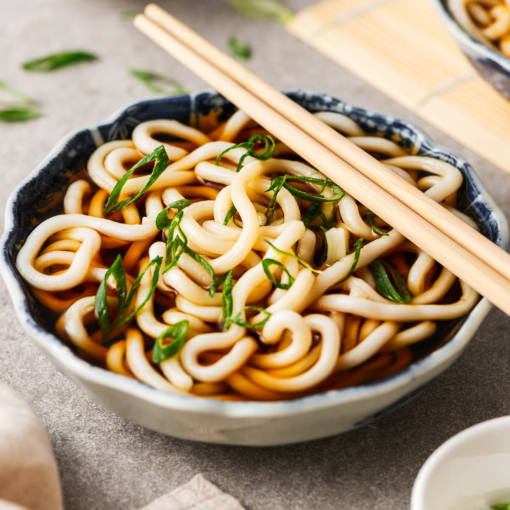

#9
Udon

Udon is a thick noodle made from wheat flour, used in Japanese cuisine. It is usually topped with thinly chopped scallions.
Ingredients
- 5 cups water
- 5 teaspoons instant dashi granules
- 2 tablespoons dark soy sauce
- 2 tablespoons light soy sauce
- 1 tablespoon sugar
- 2 tablespoon mirin
- 1 pound dried udon noodles
- 1/4 cup green onions, thinly sliced
- Seven-spice mixture (optional)
Instructions
- Cook udon noodles according to the instructions on the packaging. Drain and rinse under cold water before setting aside.
- Bring a large pot of water to a boil. Add in dashi granules to the water along with dark and light soy sauce, sugar, and mirin.
- Bring to a simmer and let cook until the sugar and dashi have dissolved.
- Divide noodles and broth between 4 bowls and garnish with green onions and seven-spice. Serve immediately.